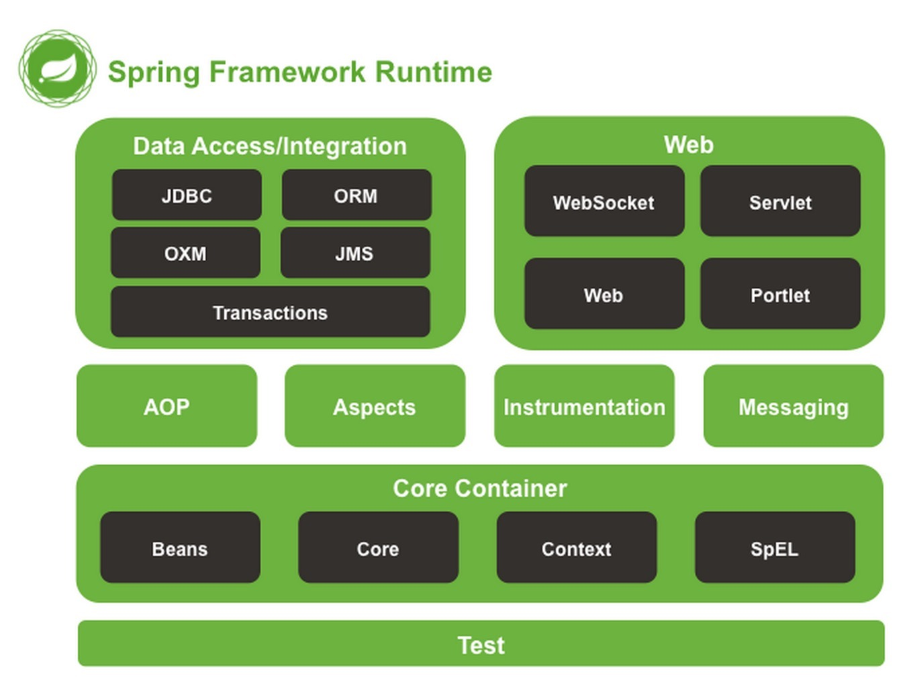

概述与环境准备
学习说明
- 提升自己的核心竞争力才是关键
快读读懂他人的，甚至大神级的框架代码
设计出让自己变得不可替代的技术方案
切入点：读懂spring框架的核心源码，锻炼框架的设计能力
通过自研框架模拟spring的设计
- 学习方法
使用ide跟着调试
大致理解的基础上继续坚持学习
- 目的
了解自研框架的总体架构设计
了解spring的总体架构以及学习路径
- 特点/优点
详尽的文档
快速方便的集成项目用到的技术
Spring简史与介绍
- spring设计初衷
可以采用Spring构造任何程序，而不局限于web程序
轻量级：最少的侵入，与应用程序低耦合，接入成本低
最直观的感受：基于POJO，构建出稳健而强大的应用
- 为各大技术领域提供服务支持
Spring架构介绍

spring-core
- 包含框架基本的核心工具类，其它组件都要使用到这个包里的类
- 定义并提供资源的访问方式
spring-beans：spring主要面向bean编程（BOP）
- bean定义 （BeanFactory）
- bean解析
- bean创建
spring-context
- 为spring提供运行时环境，保存对象的状态
- 扩展了BeanFactory （ApplicationContext）
spring-aop：最小化的动态代理实现
- jdk动态代理
- Cglib
- 只能使用运行时织入，仅支持方法级编织，仅支持方法执行切入点
spring-aspectj + spring-instrument ： Full AspectJ
Spring源码下载编译
- 环境准备：jdk 11、maven 3.6、idea、Gradle（需要了解使用Gradle）